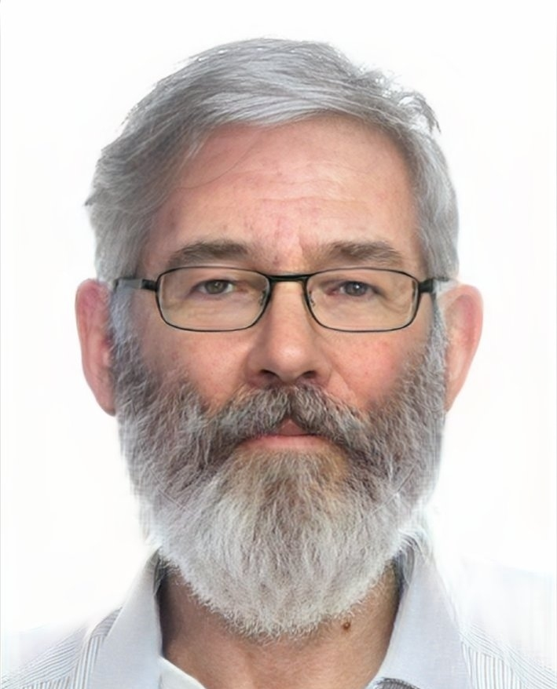

with Change
About me
My name is Bekzat. Now I am 60 years old. I born in Ekibastuz in 2005. Ekibastuz is a
small town in a Pavlodar region. Now I am a specialist in cybersecurity with work experience for 40 years. Now I will tell you how it all began.
Childhood-Teenager
I was the most ordinary child. In the family I am an older child. After me there are 3 little sisters. I went to school at the age of 6. I studied from 1 to 6th grade in a regular school. Began to go in for sports from 7. In the summer I went to the village to my grandparents. In the 7th grade, I entered the Lyceum. And studied there from 7 to 11th grade. After school I studied at Astana IT university.

Young
I was only 20 years old when I started my career in cybersecurity. I completed my bachelor's degree in Cybersecurity from a prestigious technical university AITU and began working for a large technology company that developed software.
Now
Since then, 40 years have passed, and I have become one of the most experienced professionals in my field. I have come a long way, starting as a software developer and later moving into information security.
Throughout my career, I have worked for several large companies, dealing with various aspects of cybersecurity, from developing secure systems to vulnerability analysis. I have obtained numerous certifications and have become an expert in cryptography and data protection.
Today, in 2063, I am a highly respected cybersecurity consultant, advising companies and governments on how to protect their systems and data from cyber threats. Despite my age, my knowledge and expertise are still in high demand, and I continues to earn a substantial income from my work.
And what am I doing now?
Now I am living in LN. I earn a lot of € money. At the moment, I am actively doing sports. I want to show my schedule
| Monday |
Tuesday |
Wednesday |
Thursday |
Friday |
Saturday |
Sunday |
| Freeday |
Workout |
Freeday |
Workout |
Freeday |
Workout |
Freeday |